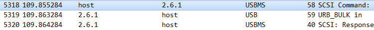
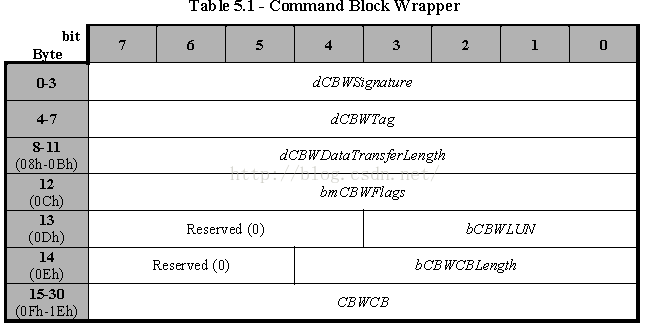
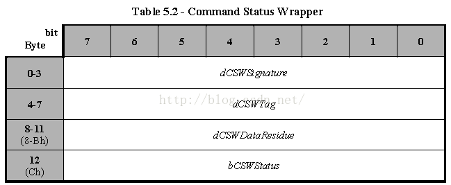

USBMS大容量存储设备数据通信
整理一下在USB通信时所作的相关工作，因为是对USBMS进行相关操作，涉及到了USBMS的传输格式（CBW，CSW），不太熟悉导致前期回补了一下USB的相关知识。
因为在搜索资料的时候，发现市面上貌似这方面编程相关资料比较少，这里我直接写出来记录一下，也是帮助自己记忆。
传输数据上的简单概念
usb在普通通信过程中，使用端点进行通信，USBMS（USB Mass Storage）设备则在传输过程中遵守一套传输格式。
-
CBW->DATA->CSW
-
CBW：是一个数据块，携带主机发给设备的SCSI命令。接收了CBW后，设备就可以从中知道在接下来的DATA阶段中该干什么。
-
DATA：阶段有三种情况：无数据需要传输，IN传输（设备到主机）或OUT传输（主机到设备）。
-
CSW：阶段反馈这次传输的结果给主机。
发送数据时，host需要按照这个格式与device进行通信，也只有这样的通信，设备才会与host进行正常的交互。
数据详解

CBW
1 | // Section 5.1: Command Block Wrapper (CBW) |

注意：发送时指定发送字节为
31个字节，发送错误会导致无法识别包为CBW包。command_block_wrapper，该数据结构长度为
32字节，调用write函数时需注意。
1 | dCBWSignature: CBW的标识，固定值：43425355h(little endian)。 |
DATA
这里就是真正的数据传输期了，可以没有数据，可以读数据，可以写数据。
数据的交互都是双方约定的过程，假设在host发送一个私有命令，设备有数据发上来，此时host调用read函数。
CSW
1 | // Section 5.2: Command Status Wrapper (CSW) |

CSW的长度为13个字节，是对应CBW指令的状态返回，它指示了上一条指令执行是否成功。
1 | dCSWSignature: CSW的标识，固定值：53425355h(little endian)。 |
可以借鉴：GitHub
分析工具
linux和windows下都通用的是，使用wireshake，抓包工具抓取的包都是一样的，而且都比较好用，算是比较推荐的。推荐文章，linux下USB数据包分析(usbmon + wireshark)。
另外windows下，有Bus Hound，也是非常好用，只是linux没有。
Title: USBMS大容量存储设备数据通信
Author: 小师
Date: 2019-08-15
Last Update: 2020-07-21
Blog Link: chunlife.top/2019/08/15/usUSBMS大容量存储设备数据通信/
Copyright Declaration: 本站所有文章及作品均采用知识共享署名-非商业性使用-相同方式共享 4.0 国际许可协议进行许可。转载请注明出处。